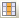

|
|
|
|
|
|
|
|
This section describes how to sort the variables and set up column headings in the Variable Editor.
The Variable Editor can sort the variables by their Name, Data Type, Data Source, Scan Group, Device Address, Alarm Group, and Logging Group.
Use the Variable Editor's column headings to sort the variables. Click the Variable node to display the variables in the Variable editor and sort the variables using the following methods:
|
To |
Do this |
Description |
|
Sort by Name |
Click the Name column heading. |
Variables are sorted alphabetically according to the variable name. |
|
Sort by Data Type
|
Click the Data Type column heading. |
Variables are grouped according to their data type, sorted alphabetically by the data type name, and then sorted alphabetically by the variable name. |
|
Sort by Data Source |
Click the Data Source column heading. |
Variables are grouped according to their data sources (Internal or External), sorted alphabetically by the data source name, and then sorted alphabetically by the variable name. |
|
Sort by Scan Group |
Click the Scan Group column heading. |
Variables are grouped according to their scan group, sorted numerically and alphabetically by the scan group name. |
|
Sort by Device Address |
Click the Device Address column heading. |
Variables are sorted numerically (highest to lowest or lowest to highest) and alphabetically according to their device address. |
|
Sort by Alarm Group |
Click the Alarm Group column heading. |
Variables are grouped according to their alarm group, sorted alphabetically by the alarm group name, and then sorted alphabetically by the variable name. |
|
Sort by Logging Group |
Click the Logging Group column heading. |
Variables are grouped according to their logging group, sorted alphabetically by the logging group name, and then sorted alphabetically by the variable name. |
You can also add columns to the Variable Editor and sort the variables by:
Alarm Type, Alarm-Deadband, Alarm-Severity, Alarm-LoLo, Alarm-Lo, Alarm-Hi, Alarm-HiHi, Alarm-Target, Alarm-Minor, Alarm-Major. For more information on each alarm column, see Section 16.3.3, Word Alarms.
DataScaling, DataScaling-Raw Min, DataScaling-Raw Max, DataScaling-Scaled Min, Data-Scaling-Scaled Max, Initial Value, Input Range, Input Range-Min, Input Range-Max, Log User Operations on Variable, Num of Bytes, Reference, Reference String, Retentive, Sharing. For more information on each column, see Section 6.2.3, Variable Properties.
You can use the Variable Editor Column Configuration dialog box to add, remove, and change the column's position in the Variable Editor.
To open the Variable Editor Column Configuration dialog box, click the Column Configuration icon

in the Variable Editor.Use the buttons in the Variable Editor Column Configuration dialog box to add, remove, move up, and move down the displayed columns. Use the Reset to Default button to place the following columns into the Display Column list: Data Type, Data Source, Scan Group, Device Address, Alarm Group, and Logging Group.
Click OK.
The columns you select for display are saved with the target in the project. The Variable Editor updates the column display after you exit the dialog box.